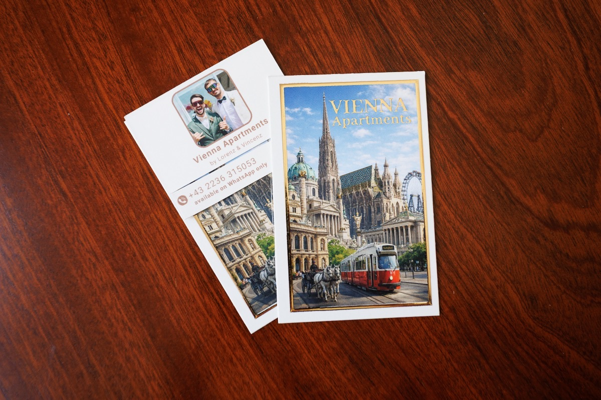

Servus! Alles für deinen Aufenthalt auf einer Seite – oben die schnellen Hilfen, darunter Wohnung, Anreise und unsere Tipps.Servus! Everything for your stay on one page – quick help first, then the apartment, getting here and our tips.
Hilfe sofortQuick help
Haustür öffnenOpening the building door
Die Haustür hat keine Klingel. Dreh das kleine silberne Schloss (im Foto grün markiert) mit den Fingern und drück die Tür auf, sobald es summt – kein Werkzeug nötig. Am besten gleichzeitig drehen und drücken.
Lichtschalter: rechts innen. Dann die Stiegen in den 2. Stock – Wohnung 12-13 ist die erste Tür links.
The building door has no doorbell. Turn the small silver lock (circled green in the photo) with your fingers and push the door as soon as you hear the buzz – no tool needed. Best: turn and push at the same time.
Light switch: on the right inside. Then take the stairs to the 2nd floor – apartment 12-13 is the first door on the left.

Wohnungstür und CodeApartment door and code
Schwarzes Tastenfeld an der Tür: Code eingeben, die Tür öffnet automatisch. Deinen Code bekommst du am Anreisetag um 11:00 hier im Chat, sobald die Gästeregistrierung ausgefüllt ist. Er bleibt den ganzen Aufenthalt gleich.
Geht nicht beim ersten Mal? Code langsam noch einmal eingeben und dabei die Tür zu dir ziehen. Zwischen zwei Versuchen 10 Sekunden warten, Tasten nur kurz drücken.
Absperren: außen „>“ am Tastenfeld drücken · innen der mittlere Knopf am Schloss.
Black keypad on the door: enter your code, the door opens automatically. You receive the code at 11:00 on arrival day here in the chat, as soon as the guest registration is completed. It stays the same for your whole stay.
Not opening the first time? Enter the code again slowly while pulling the door towards you. Wait 10 seconds between attempts and press the keys briefly.
Locking: outside press “>” on the keypad · inside press the centre button on the lock.
HeizungHeating
Die Wohnung hat Fußbodenheizung. Gesteuert wird sie über den weißen, rechteckigen Thermostat im Wohnbereich:
- Temp drücken – die Komfort-Temperatur blinkt.
- Mit der ☼-Taste auf 23–24 °C stellen (jeder Druck = 0,2 °C).
- OK drücken.
Fußbodenheizung ist langsam: rechne mit einigen Stunden, bis es spürbar warm wird. Zusätzliche Decken liegen im unteren Schrank.
Bad: der Handtuchheizkörper hat seinen eigenen Regler direkt am Gerät.
The apartment has underfloor heating, controlled by the white rectangular thermostat in the living area:
- Press Temp – the comfort temperature starts flashing.
- Use the ☼ key to set 23–24 °C (each press = 0.2 °C).
- Press OK.
Underfloor heating is slow: allow a few hours until you feel the warmth. Extra blankets are in the bottom cabinet.
Bathroom: the towel radiator has its own control directly on the unit.


Heizung im WCHeating in the toilet
Im WC hängt ein Infrarot-Heizpaneel an der Decke. Du steuerst es mit der kleinen weißen Fernbedienung:
- ⏻ drücken – das Paneel heizt sofort.
- Temperatur mit + und – einstellen (Anzeige SET).
- Fertig? Wieder ⏻ drücken und ausschalten – so sparen wir gemeinsam Energie.
Zeigt die Anzeige °F statt °C: + und – gleichzeitig drücken. Reagiert nichts: Kindersicherung – ⏻ und – 3 Sekunden halten.
The toilet has an infrared heating panel on the ceiling, controlled with the small white remote:
- Press ⏻ – the panel heats up right away.
- Set the temperature with + and – (display SET).
- Done? Press ⏻ again to switch it off – that way we save energy together.
Display shows °F instead of °C: press + and – at the same time. No reaction: child lock – hold ⏻ and – for 3 seconds.

WarmwasserHot water
Nach mehreren Duschen hintereinander braucht der Boiler 30–45 Minuten, dann ist wieder heißes Wasser da.
After several showers in a row the boiler needs 30–45 minutes to reheat, then hot water is back.
WLANWi-Fi
Netzwerk TP-Link_69CC · Passwort 26992211
Kein Internet? Router 30 Sekunden vom Strom nehmen, wieder anstecken, 2 Minuten warten. Hilft das nicht: schreib uns kurz hier im Chat.
Network TP-Link_69CC · password 26992211
No internet? Unplug the router for 30 seconds, plug it back in and wait 2 minutes. If that does not help, send us a short message here in the chat.
Kein Strom?No electricity?
Der Sicherungskasten ist neben der Wohnungstür. Alle Schalter, die unten stehen, wieder nach oben kippen – auch den FI-Schalter. Bleibt es dunkel: Nachricht an uns.
The fuse box is next to the apartment door. Flip any switch that is down back up – including the RCD (FI) switch. Still dark? Send us a message.
Hilfe und NotfallHelp and emergencies
- Schritte oben probieren – sie lösen die meisten Probleme in einer Minute.
- Nachricht hier im Buchungs-Chat – der schnellste Weg, wir lesen mit.
- Nur im Notfall (ausgesperrt, Wasserschaden, Rauchmelder): WhatsApp +43 2236 315053 – nachts zweimal anrufen.
Piept der Rauchmelder: sofort melden, wir kümmern uns – bitte nichts abmontieren.
Notrufe: 112 Euronotruf · 144 Rettung · 122 Feuerwehr · 133 Polizei
Apotheke: Nachtdienst unter nachtapotheke.wien oder Tel. 1455
- Try the steps above – they solve most problems within a minute.
- Message us here in the booking chat – the fastest way, we read along.
- Emergencies only (locked out, water damage, smoke alarm): WhatsApp +43 2236 315053 – at night call twice.
If the smoke detector beeps: tell us right away, we take care of it – leave the device in place.
Emergency numbers: 112 European emergency · 144 ambulance · 122 fire brigade · 133 police
Pharmacy: night service at nachtapotheke.wien or call 1455
Die WohnungThe apartment
Check-in und Check-outCheck-in and check-out
Check-in ab 15:00. Sobald die Reinigung früher fertig ist (frische Bettwäsche und Handtücher liegen bereit), kannst du einziehen. Gepäck ab 11:00 abstellen – siehe Gepäck.
Check-out bis 11:00. Fenster schließen, Klimagerät ausschalten, Tür zuziehen – fertig. Später auschecken geht wegen der Reinigung und der nächsten Gäste leider nicht; Schließfächer am Hauptbahnhof helfen.
Etwas vergessen? Schreib uns, wir schauen nach der Reinigung nach.
Check-in from 15:00. If cleaning finishes earlier (fresh bed linen and towels are out), you can move in right away. Luggage from 11:00 – see Luggage.
Check-out by 11:00. Close the windows, switch off the air conditioner, pull the door shut – done. Late check-out is not possible because of cleaning and the next guests; the lockers at Hauptbahnhof help.
Forgot something? Message us and we check after cleaning.
Betten und SchlafenBeds and sleeping
Schlafzimmer: Doppelbett 180 × 200 cm. Wohnbereich: Schlafsofa 160 × 200 cm – so haben bis zu 4 Personen Platz. Welche Betten wir vorbereiten, wählst du im Registrierungsformular (Link im Chat, änderbar bis 24 Stunden vor der Anreise).
Babybett auf Wunsch kostenlos – bitte eigene Babybettwäsche mitbringen. Zusätzliche Decken: im unteren Schrank.
Bedroom: double bed 180 × 200 cm. Living area: sofa bed 160 × 200 cm – room for up to 4 guests. You choose which beds we prepare in the registration form (link in the chat, changeable until 24 hours before arrival).
Baby cot on request, free of charge – please bring your own cot bedding. Extra blankets: bottom cabinet.
KücheKitchen
Induktionsherd: Nach dem Einschalten ist die Kindersicherung aktiv – Schloss-Taste 3 Sekunden halten. Dann Ein/Aus drücken (Anzeige „0“) und die Leistung mit + / – wählen.
Kaffee: Kapselmaschine (Nespresso-System), Kapseln und Tee sind gratis. Toaster und Schneidebrett findest du in den Kästen; Geschirrspüler mit Tabs; Besen in der Küche.
Wiener Leitungswasser kommt aus den Alpen – trink es ruhig.
Induction hob: After switching on, the child lock is active – hold the lock key for 3 seconds. Then press On/Off (display shows “0”) and choose the power level with + / –.
Coffee: capsule machine (Nespresso system); capsules and tea are free. Toaster and cutting board are in the cabinets; dishwasher with tabs; broom in the kitchen.
Vienna tap water comes from the Alps – drink it freely.

Klimagerät (Sommer)Air conditioner (summer)
Mobiles Klimagerät im Schlafzimmer:
- Den weißen Schlauch aus dem Fenster hängen.
- Vorhang schließen, damit die warme Luft draußen bleibt; die Ansaugung vorne frei lassen. Gerät einschalten (Schneeflocke = Kühlen), Fenster und Türen geschlossen halten.
- Leuchtet „Water Full“: Glas unter den schwarzen Stöpsel hinten halten, öffnen, leeren, Stöpsel fest schließen. Das Wasser bitte nicht trinken.
Tipp für heiße Tage: tagsüber Fenster und Vorhänge zu, nachts querlüften.
Mobile air conditioner in the bedroom:
- Hang the white hose out of the window.
- Close the curtain so the warm air stays outside; keep the air intake at the front clear. Switch on (snowflake = cooling), keep windows and doors closed.
- “Water Full” light on: hold a glass under the black plug at the back, open, empty, close the plug firmly. Please do not drink the water.
Tip for hot days: keep windows and curtains closed during the day, air the rooms at night.


Waschen und BügelnLaundry and ironing
Die Waschmaschine wäscht und schleudert (kein Trockner) – Wäscheständer steht bereit. Bügeleisen und Bügelbrett sind in der Wohnung. Das Duschgel im Bad eignet sich auch als Shampoo.
The washing machine washes and spins (no dryer) – a drying rack is there for you. Iron and ironing board are in the apartment. The shower gel in the bathroom also works as shampoo.
Fernsehen und StreamingTV and streaming
Smart-TV: App „Joyn“ öffnen – alle österreichischen Sender gratis. Zusätzlich steckt ein Fire TV Stick am Fernseher. Netflix & Co. nutzt du mit deinem eigenen Konto; beim Check-out bitte abmelden.
Smart TV: open the “Joyn” app – all Austrian channels for free. A Fire TV Stick is also connected. Use Netflix & Co. with your own account and log out at check-out.
Müll trennenWaste and recycling
Im Innenhof stehen die Tonnen für
- ⚫️ Restmüll (schwarz) – auch Bioabfall
- 🔴 Papier und Karton (rot)
Glas (⚪️🟢), Metall und Plastik (🟡) kommen in die Container ums Eck: nach dem Haus zweimal links (siehe Karte) · Google Maps
Auf Plastikflaschen und Dosen sind 0,25 € Pfand – zurück in jeden Supermarkt.
In the inner courtyard you find the bins for
- ⚫️ residual waste (black) – also food waste
- 🔴 paper and cardboard (red)
Glass (⚪️🟢), metal and plastic (🟡) go to the containers around the corner: after leaving the building turn left twice (see map) · Google Maps
Plastic bottles and cans carry a €0.25 deposit – return them to any supermarket.

Gut zu wissenGood to know
- Die Wohnung ist für maximal 4 Personen; zusätzliche Gäste bitte vorher ankündigen (Airbnb: Gästezahl in der App ändern).
- Haustiere sind in dieser Wohnung nicht möglich.
- Wohnen und Schlafen sind ein offener Raum ohne Zwischentür; das Haus ist ein ruhiger Altbau von 1900 – 2. Stock ohne Lift.
- Verlängern oder umbuchen geht direkt über Airbnb bzw. Booking.com; schreib uns, wir bestätigen.
- Gefundene Sachen vom Vorgast: auf den Esstisch legen und uns kurz Bescheid geben.
- The apartment is for up to 4 guests; please announce additional guests in advance (Airbnb: change the number of guests in the app).
- Pets are not possible in this apartment.
- Living and sleeping area form one open space without a separating door; the building is a quiet 1900 house – 2nd floor, no lift.
- Extending or changing your booking works directly via Airbnb or Booking.com; message us and we confirm.
- Items left by a previous guest: put them on the dining table and let us know.
Anreise und ParkenGetting here and parking
Vom Flughafen zur WohnungFrom the airport to the apartment
Zug (schnell und günstig): Railjet, Intercity oder REX vom Flughafen zum Wien Hauptbahnhof, alle 30 Minuten, rund 15 Minuten Fahrt. Ticket am Automaten oder in der ÖBB-App (Flughafen → Wien; der Flughafen liegt außerhalb der Stadtzone, Wien-Tickets gelten erst ab der Stadtgrenze).
Bis Oktober 2027 wird die S-Bahn-Strecke durch die Stadt umgebaut: S7 und CAT fahren nicht durch. Nimm den Railjet.
Bus: Vienna Airport Bus VAB1 bis Hauptbahnhof, alle 30 Minuten, 11 € einfach / 20 € retour.
Taxi: Fixpreis-Taxi vorbestellt ab ca. 40–50 €, am Standplatz oft mehr. Uber fährt auch.
Zieladresse: Van-der-Nüll-Gasse 8/12-13, 1100 Wien · Google Maps
Train (fast and cheap): Railjet, Intercity or REX from the airport to Wien Hauptbahnhof (main station), every 30 minutes, about 15 minutes. Ticket at the machines or in the ÖBB app (airport → Vienna; the airport lies outside the city zone, so Vienna tickets are valid only from the city border).
Until October 2027 the S-Bahn line through the city is under construction: the S7 and the CAT do not run through. Take the Railjet.
Bus: Vienna Airport Bus VAB1 to Hauptbahnhof, every 30 minutes, €11 one way / €20 return.
Taxi: pre-booked fixed-price taxi from about €40–50, taxis at the rank often charge more. Uber works too.
Destination: Van-der-Nüll-Gasse 8/12-13, 1100 Wien · Google Maps
Öffis, Tickets, City CardPublic transport, tickets, City Card
Tickets gelten pro Person, am einfachsten in der WienMobil-App oder ÖBB-App (digital günstiger als Papier):
- Einzelfahrt 3,00 € (Papier 3,20 €)
- 24 Stunden 9,70 € (Papier 10,20 €)
- 7 Tage 25,20 € (Papier 28,90 €)
Vienna City Card (Öffis + Ermäßigungen, ein Kind unter 15 fährt pro Karte gratis mit): 24 h 19 € · 48 h 31 € · 72 h 37 € · 7 Tage 39 € – viennacitycard.at
Rad: WienMobil Rad an Stationen in der ganzen Stadt, 0,80 € je 30 Minuten (WienMobil-App).
Tickets are per person; easiest in the WienMobil app or ÖBB app (digital is cheaper than paper):
- Single ride €3.00 (paper €3.20)
- 24 hours €9.70 (paper €10.20)
- 7 days €25.20 (paper €28.90)
Vienna City Card (public transport + discounts, one child under 15 rides free per card): 24 h €19 · 48 h €31 · 72 h €37 · 7 days €39 – viennacitycard.at
Bikes: WienMobil Rad at stations all over the city, €0.80 per 30 minutes (WienMobil app).
ParkenParking
Auf der Straße: Kurzparkzone Mo–Fr 9–22 Uhr, maximal 2 Stunden – zahlen mit der App HANDYPARKEN (handyparken.at, ausländische Nummern funktionieren) oder mit Parkschein aus der Trafik. Abends, am Wochenende und an Feiertagen gratis ohne Limit. Zum Ausladen 15 Minuten gratis (Ankunftszeit auf einen Zettel hinter die Windschutzscheibe).
Garage: APCOA Columbusplatz, 600 m, 24 h offen: 4 €/Stunde, maximal 15 €/Tag, bis 14 Tage – Google Maps. Tipp: zuerst das Gepäck vor dem Haus ausladen.
On the street: short-term parking zone Mon–Fri 9:00–22:00, max. 2 hours – pay with the HANDYPARKEN app (handyparken.at, foreign numbers work) or with a paper ticket from a tobacco shop (Trafik). Evenings, weekends and public holidays: free, no limit. Unloading: 15 minutes free (put your arrival time on a note behind the windscreen).
Garage: APCOA Columbusplatz, 600 m, open 24 h: €4/hour, max. €15/day, up to 14 days – Google Maps. Tip: unload your luggage in front of the house first.
Gepäck vor 11:00 oder nach dem Check-outLuggage before 11:00 or after check-out
Am Anreisetag kannst du dein Gepäck ab 11:00 in der Wohnung abstellen (gepackt lassen, die Reinigung ist vielleicht noch da). Davor und nach dem Check-out: Schließfächer am Wien Hauptbahnhof (Beschilderung „Schließfächer / Lockers“, ab ca. 2 € pro 24 Stunden) und am Westbahnhof – Info ÖBB
On arrival day you can leave your luggage in the apartment from 11:00 (keep it packed, the cleaning team may still be there). Before that and after check-out: lockers at Wien Hauptbahnhof (signs “Schließfächer / Lockers”, from about €2 per 24 hours) and at Westbahnhof – ÖBB info
Essen und TippsFood and tips
Essen und Trinken im GrätzlEating and drinking in the neighbourhood
Ferhat Döner – Favoritenstraße 94, täglich 11–22. Steak-Döner mit hausgemachtem Brot, meist Schlange – lohnt sich.
Rasoi – Favoritenstraße 76A, täglich 10:30–22:30. Für uns das beste Curry Wiens (Butter Chicken!).
Kaiser's Kaiserschmarrn – Favoritenstraße 83. Kaiserschmarrn auch zum Mitnehmen, das Lieblingsessen von Kaiser Franz Joseph.
Eissalon Tichy – Reumannplatz 13, März bis Oktober. Die berühmten Eismarillenknödel, Erfindung von Kurt Tichy 1952.
Günay – Keplerplatz 15. Türkisches Frühstück mit Sucuk, Omelett und Mezze, 5 Minuten von der Wohnung.
Bäckerei Anker – am Keplerplatz, auch sonntags. Frühstück, Kaffee, Gebäck.
Viktor-Adler-Markt – zwischen Keplerplatz und Reumannplatz, Mo–Fr 6–18:30, Sa 6–14. Über 80 Stände, österreichisch, türkisch, griechisch; Bauernmarkt am Samstagvormittag.
Meixners Gastwirtschaft – Buchengasse 64, Mo–Sa 11:30–22. Wiener Küche modern gekocht, Grammelknödel – reservieren.
Mimi im Stadtelefant – Bloch-Bauer-Promenade 23 (Sonnwendviertel), Abendkarte Mi–Fr ab 17:30. Täglich wechselnde Karte, Gastgarten.
MABEL'S No90 – Laxenburger Straße 90. Pub mit über 100 Cocktails, Happy Hour täglich 18–20.
Amalienbad – Reumannplatz 23. Hallenbad von 1926 im Stil des Roten Wien, Erwachsene 8,10 € – ideal bei Regen.
Therme Wien – U1 bis Oberlaa, täglich 9–22, Preise online auf thermewien.at.
Ferhat Döner – Favoritenstraße 94, daily 11–22. Steak döner in homemade bread, usually a queue – worth it.
Rasoi – Favoritenstraße 76A, daily 10:30–22:30. For us the best curry in Vienna (butter chicken!).
Kaiser's Kaiserschmarrn – Favoritenstraße 83. Kaiserschmarrn also to go – the favourite dish of Emperor Franz Joseph.
Eissalon Tichy – Reumannplatz 13, March to October. The famous ice-cream apricot dumplings, invented by Kurt Tichy in 1952.
Günay – Keplerplatz 15. Turkish breakfast with sucuk, omelette and mezze, 5 minutes from the apartment.
Bäckerei Anker – at Keplerplatz, open on Sundays too. Breakfast, coffee, pastries.
Viktor-Adler-Markt – between Keplerplatz and Reumannplatz, Mon–Fri 6–18:30, Sat 6–14. Over 80 stalls, Austrian, Turkish, Greek; farmers' market on Saturday mornings.
Meixners Gastwirtschaft – Buchengasse 64, Mon–Sat 11:30–22. Viennese cooking with a modern touch, try the Grammelknödel – book a table.
Mimi im Stadtelefant – Bloch-Bauer-Promenade 23 (Sonnwendviertel), dinner Wed–Fri from 17:30. Daily changing menu, garden.
MABEL'S No90 – Laxenburger Straße 90. Pub with over 100 cocktails, happy hour daily 18–20.
Amalienbad – Reumannplatz 23. Indoor pool from 1926 in the style of Red Vienna, adults €8.10 – ideal on a rainy day.
Therme Wien – U1 to Oberlaa, daily 9–22, prices online at thermewien.at.
Unsere Wien-TippsOur Vienna tips
Reinthaler's Beisl – Dorotheergasse 2-4 (beim Stephansdom). Wiener Schnitzel und Apfelstrudel, hier essen Wiener seit 1914. Vegetarisch: Spinatknödel.
Café Sperl – Gumpendorfer Straße 11, Mo–Sa 7–22, So 10–20. Kaffeehaus seit 1880, viel weniger Schlange als im Café Central.
Justizcafé am Dach des Justizpalastes – Oberster Gerichtshof, Schmerlingplatz 11. Mittagessen mit Blick über die Stadt; einfach durch die Sicherheitskontrolle und mit dem Lift hinauf (werktags).
Donaukanal – ab U1 Schwedenplatz. Frühstück oder Mittag im KLYO (Uraniastraße 1), ab Mittag öffnen die Bars am Wasser.
Haus des Meeres – Zoo im Flakturm (Esterházypark), täglich, Erwachsene 23,50 €. Perfekt bei Regen.
Parlament – kostenlose Führungen, Anmeldung online bis 28 Tage vorher: parlament.gv.at
Original Sachertorte – Café Sacher, Philharmonikerstraße 4. Auch als Mitbringsel.
Le Burger – Lorenz' Lieblingsburger (Coleslaw Burger, Knoblauchmayo), z. B. Rotenturmstraße 15 oder Mariahilfer Straße 114.
Aurora Rooftop Bar – Arsenalstraße 10 (Andaz, 16. Stock), 10 Minuten vom Hauptbahnhof. Unser Tipp: Passionato Basil Smash.
Reinthaler's Beisl – Dorotheergasse 2-4 (next to St. Stephen's). Wiener Schnitzel and apple strudel, where locals have eaten since 1914. Vegetarian: Spinatknödel (spinach dumplings).
Café Sperl – Gumpendorfer Straße 11, Mon–Sat 7–22, Sun 10–20. Coffee house since 1880, far shorter queues than Café Central.
Justizcafé on the roof of the Palace of Justice – Supreme Court, Schmerlingplatz 11. Lunch with a view over the city; just pass the security check and take the lift up (weekdays).
Donaukanal – from U1 Schwedenplatz. Breakfast or lunch at KLYO (Uraniastraße 1); from noon the bars along the water open.
Haus des Meeres – zoo inside a WWII flak tower (Esterházypark), daily, adults €23.50. Perfect on a rainy day.
Parliament – free guided tours, book online up to 28 days ahead: parlament.gv.at
Original Sachertorte – Café Sacher, Philharmonikerstraße 4. Also a great gift to take home.
Le Burger – Lorenz' favourite burger (Coleslaw Burger, garlic mayo), e.g. Rotenturmstraße 15 or Mariahilfer Straße 114.
Aurora Rooftop Bar – Arsenalstraße 10 (Andaz, 16th floor), 10 minutes from Hauptbahnhof. Our pick: Passionato Basil Smash.
WiederkommenCome back
Wiederkommen und Freunde schickenCome back and bring your friends
Du kommst wieder oder kennst jemanden, der nach Wien will? Buch direkt bei uns – 10 % unter dem Airbnb-Preis für alle wiederkehrenden Gäste und Freunde:
Code SAVE10 auf wolf.hospitable.rentals – oder schreib „SERVUS“ an WhatsApp +43 2236 315053.
Unsere Wohnungen: 1100 Wien (Muhrengasse, Van-der-Nüll-Gasse, Reisingergasse), 1140 und 1150 Wien (Hütteldorfer Straße, Goldschlagstraße, Neubaugürtel) und ein Chalet in Saalfelden.
Coming back, or know someone heading to Vienna? Book directly with us – 10 % below the Airbnb price for all returning guests and friends:
Code SAVE10 at wolf.hospitable.rentals – or text “SERVUS” to WhatsApp +43 2236 315053.
Our apartments: 1100 Vienna (Muhrengasse, Van-der-Nüll-Gasse, Reisingergasse), 1140 and 1150 Vienna (Hütteldorfer Straße, Goldschlagstraße, Neubaugürtel) and a chalet in Saalfelden.

Über unsAbout us
Über unsAbout us
Wir sind Lorenz und Vincenz, Brüder aus Wien. Wir reisen selbst am liebsten in Wohnungen von Einheimischen – also machen wir das in Wien für andere.
2023 haben wir diese Wohnung gekauft und in 3.880 Stunden mit Freunden und Familie selbst renoviert: bröckelnde Wände, kaputte Böden, uralte Elektrik. Die Straße ist nach Eduard van der Nüll (1812–1868) benannt, dem Architekten der Wiener Staatsoper.
Wenn es dir gefallen hat: eine Empfehlung an Freunde bedeutet uns viel.
We are Lorenz and Vincenz, brothers from Vienna. When we travel we love staying in locals' apartments – so we do the same in Vienna for other travellers.
In 2023 we bought this apartment and renovated it ourselves in 3,880 hours with friends and family: crumbling walls, broken floors, ancient wiring. The street is named after Eduard van der Nüll (1812–1868), architect of the Vienna State Opera.
If you enjoyed your stay, recommending us to your friends means the world to us.